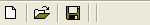

ToolBarSeparator()
语法
ToolBarSeparator()概要
Add a vertical separator to toolbar being constructed. CreateToolBar() must be called before to use this function.
参数
无.
返回值
无.
示例
If OpenWindow(0, 0, 0, 150, 25, "ToolBar", #PB_Window_SystemMenu | #PB_Window_ScreenCentered) If CreateToolBar(0, WindowID(0)) ToolBarStandardButton(0, #PB_ToolBarIcon_New) ToolBarSeparator() ToolBarStandardButton(1, #PB_ToolBarIcon_Open) ToolBarSeparator() ToolBarStandardButton(2, #PB_ToolBarIcon_Save) ToolBarSeparator() ToolBarSeparator() EndIf Repeat Event = WaitWindowEvent() If Event = #PB_Event_Menu Debug "ToolBar ID: "+Str(EventMenu()) EndIf Until Event = #PB_Event_CloseWindow EndIf

参阅
CreateToolBar(), ToolBarStandardButton(), ToolBarImageButton()
已支持操作系统
所有